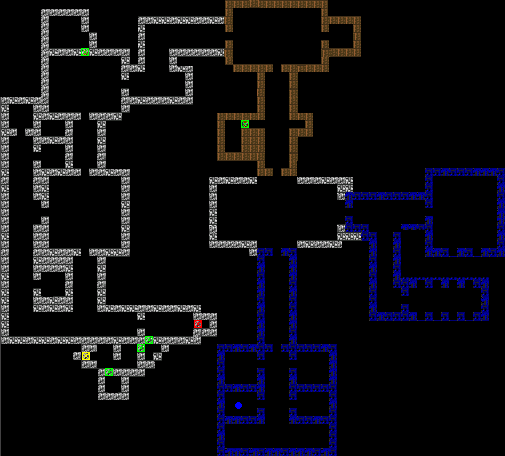
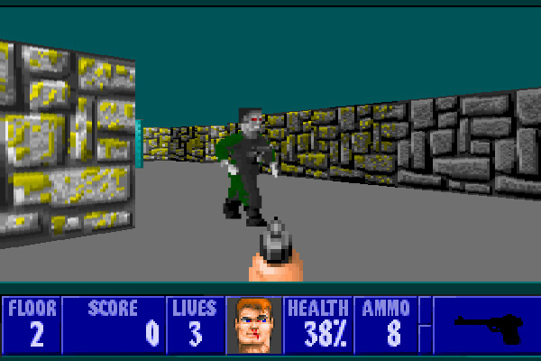
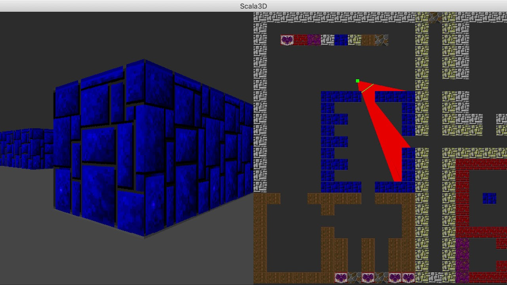

Wolfenstien 3D was developed by ID software in 1992. I was released by Apogee Software and FormGen. This game is widly considered to be one of the first FPS games ever developed. As a result, it used rather primative techniques to simulate 3D space
Ray Casting is used by the engine to create 3D space. The concept is relativly simple;maps use a tile based syestem to place walls, doors, and enemies. While you may see 3D space, the computer sees this.
A map would have a place for the player to start. The game gives a player a certian feild of veiw and objects such as walls and enemies would be draw based on their distane from the player.
To gauge this distance, the computer casts a line from the player's location to all objects in the players feild of veiw. Image a invisable line being casted from the player. The line would then trace over all objects in the feild of veiw and send back the total distance and the relative angle to the player. The computer then use the distances to draw the objects for the players enjoyment. This procces is repeated many times a second to create animation. You see a room, but the computer sees this.
While playing, you may notice that objects like furniture, enemy corpses, and items always seem to face you. When objects that follow this behavior are traced over, only the distance is returned. Enemies are drawn in a similar fashion. Enemies in the game have several sprites for different actions like shooting and walking. Each action has it's own set of eight sprites drawn from different angles. Enemies are drawn based on the action a enemy is preforming and it's angle to the player. Doing so also adds to the illusion. Sadly this syestem in limited; levels of elevation were immpossible to render and lighting is non-existant.